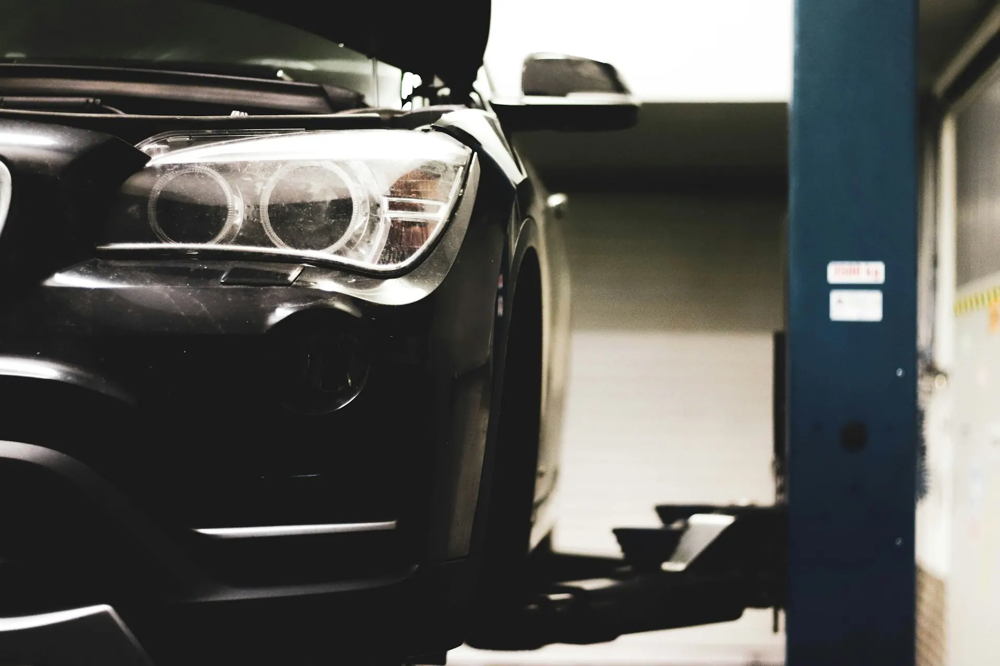
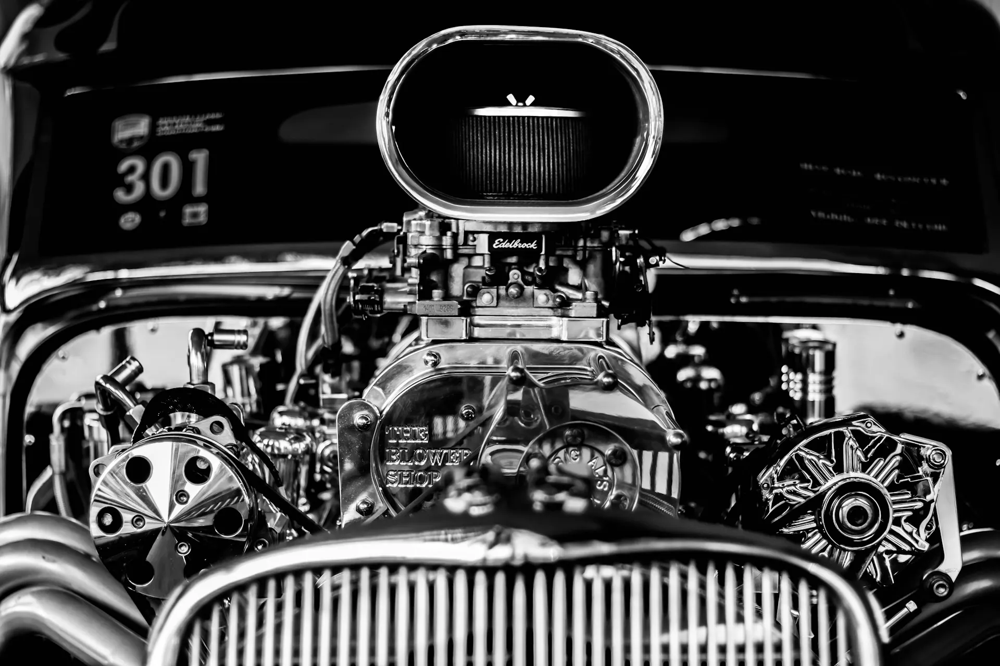
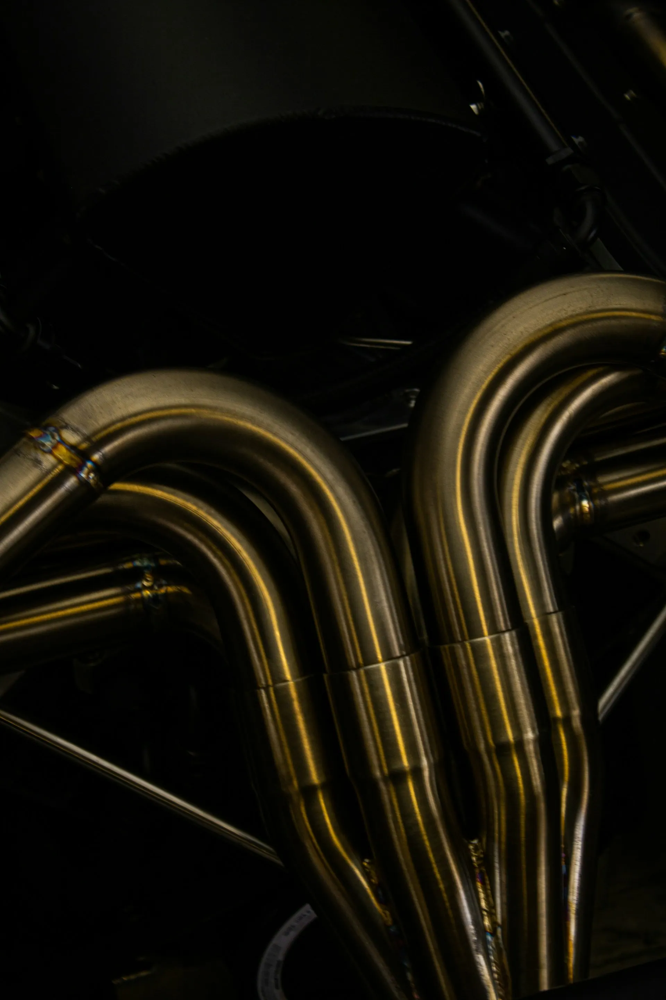
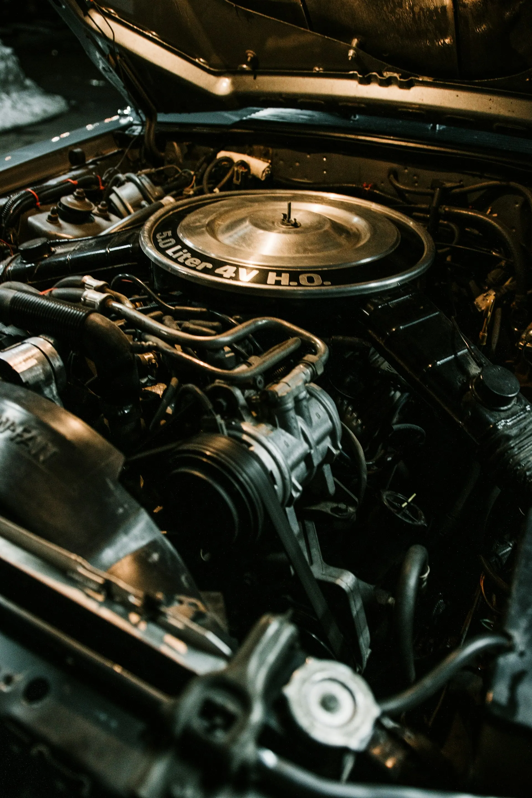

Загорелся «чек» по дороге. По телефону подсказали, что можно доехать, — нашли проблему с катушкой за час.

Сервис немецких автомобилей · Красноярск
Сервис, который знает немецкие машины наизусть.
«Седан» на Семафорной: диагностика, ремонт двигателя и ходовой, ТО — только немецкие автомобили. Свободное время — онлайн, без звонка.
Работы и стоимость
Стоимость зависит от модели, года и состояния автомобиля — мастер назовёт её после диагностики. Время в записи — примерное.
- Компьютерная диагностикаГорит «чек», машина странно себя ведёт, посторонние шумыпосле диагностики1 ч
- Ремонт бензиновых двигателейЗажигание, ГРМ, течи маслапосле диагностики4 ч
- Замена масла и ТОПоможем отличить оригинальную запчасть от подделкипосле диагностики1 ч
- Ремонт ходовой частиПодвеска, стуки и скрипыпосле диагностики2 ч
- Консультация и осмотрПодскажем, что делать сейчас, а что может подождатьпосле диагностики30 мин
Фото из нашего бокса




Почему «Седан»
Только немецкие автомобили
Не все марки подряд — поэтому знаем особенности моторов, коробок и электроники.
4,9 в 2ГИС (демо)
Так оценивают те, кто уже у нас был.
Объясняем по-человечески
Покажем, что нашли, и подскажем, что сделать сейчас, а что подождёт.
Можно позвонить с дороги
Опишите, что случилось, — подскажем, можно ли доехать своим ходом.
От записи до готовой машины
- Выбираете работу и время
Онлайн, без звонка — свободное время видно сразу.
- Получаете подтверждение
Напомним о записи накануне.
- Приезжаете на Семафорную, 30
1 этаж, парковка у входа.
- Диагностика и согласование
Мастер расскажет, что нашёл, и назовёт стоимость — потом ремонт.
4,9 из 5 — что пишут гости
ТО по записи, без очереди. В приложении видно, когда следующее, — напомнили сами.
Помогли отличить оригинальную запчасть от подделки, которую я заказал сам. Толковые мастера.
Частые вопросы
Какие машины обслуживаете?
Только немецкие автомобили — седаны, универсалы, кроссоверы и внедорожники.
Сколько стоит ремонт?
Зависит от модели, года и состояния автомобиля. Мастер назовёт стоимость после диагностики.
Когда вы работаете?
С понедельника по пятницу, с 9:00 до 18:00. Суббота и воскресенье — выходные.
Как можно оплатить?
Картой, наличными, переводом, по QR-коду или через банк.
Как вас найти?
Ул. Семафорная, 30 (адрес — демо), 1 этаж, парковка у входа.
Как нас найти
- Адрес
- ул. Семафорная, 30 (демо), Красноярск1 этаж · парковка у входа
- Часы работы
- Пн–Пт09:00–18:00Сб–Всвыходной
- Телефон
- +7 900 000-00-00
ул. Семафорная, 30 (демо), Красноярск